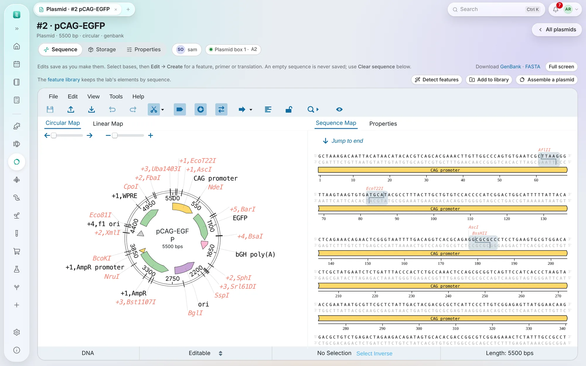
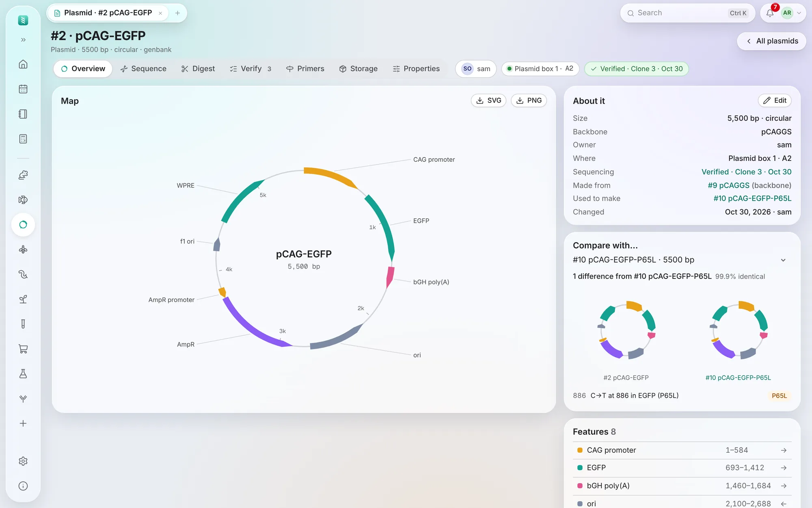
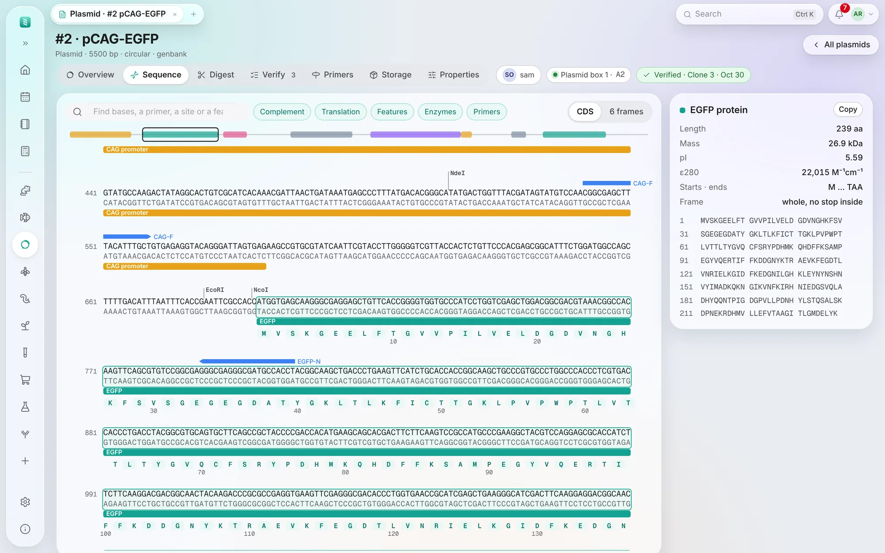
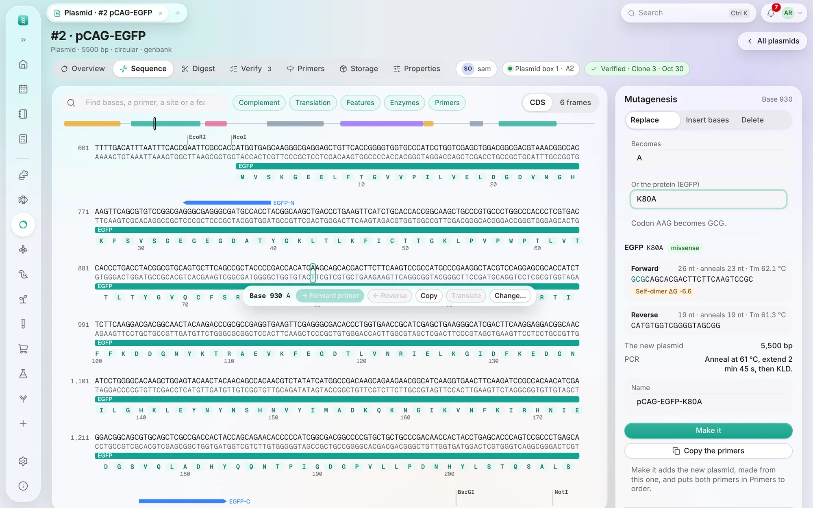
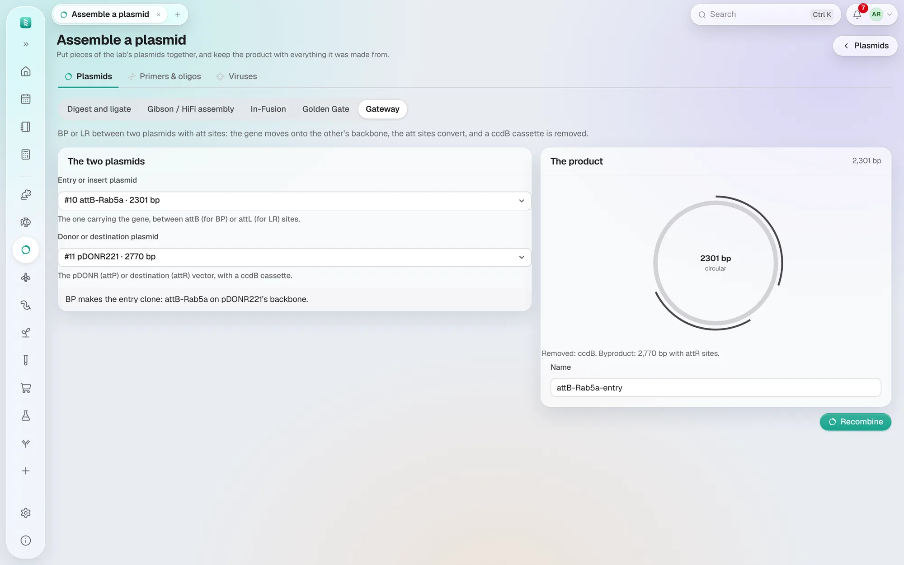
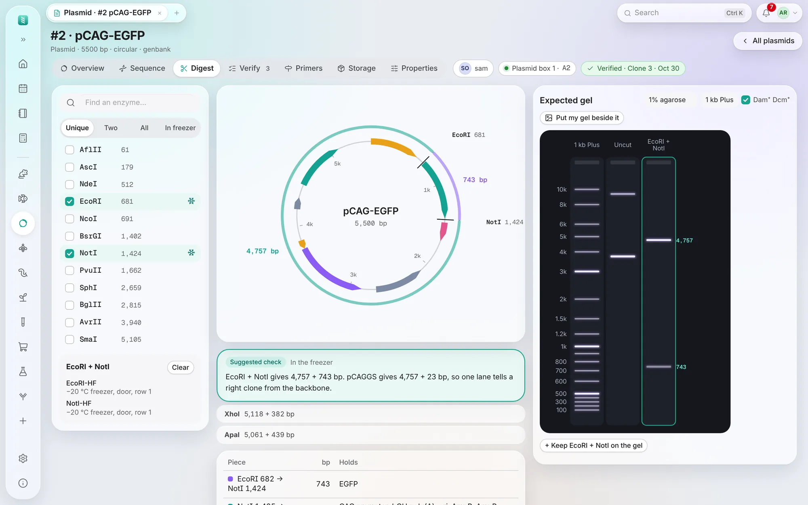
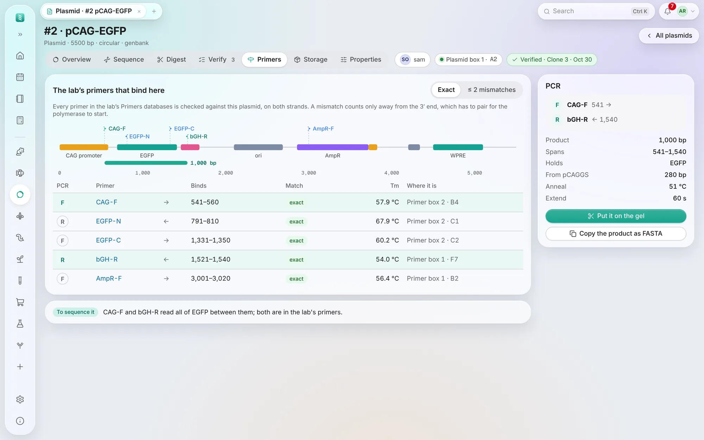
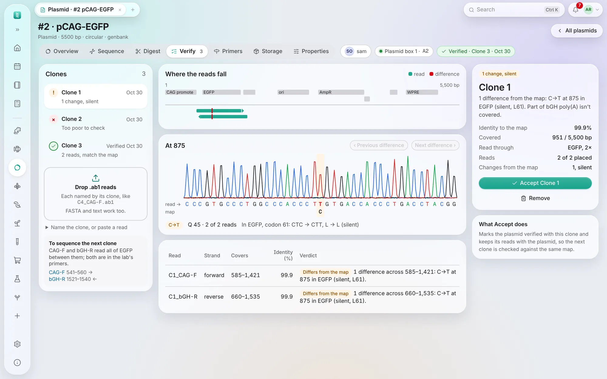

Your databases
Plasmids
Plasmid records with their map, sequence and protein, their digests and gels, the primers that bind them, the clones checked by sequencing, and the box each tube is in.
What this does for your cloning
A construct is only as good as what you can still prove about it a year later: what it was built from, which primers made it, which tube in the freezer is the real one, and whether the sequence in the file is the sequence in the tube. These pages keep the whole loop in one place instead of across SnapGene files, a primer spreadsheet and a box diagram.
| Designing it | Assemble a plasmid builds the next construct out of the ones you already have — digest and ligate, Gibson, In-Fusion, Golden Gate or Gateway — and the product records what it was made from, so a year later the family tree answers the question instead of your memory. |
|---|---|
| The primers it needs | Primers the wizard designs, and any you draw on a map yourself, land in the lab's Primers database marked to order, with the plasmid beside them. Tick them and Copy for ordering hands the list to your supplier — after Find saved primers has shown any the lab already has that bind. |
| Checking what you got | Digest shows the enzymes that tell a right clone from the backbone and the gel you should see; Verify checks the Sanger reads of each clone against the map, names every base that differs and what it does to the protein, and Accept marks the clone you keep. The reads live on the plasmid itself under Files, with the gel photo. |
| Finding the tube | Every plasmid has a box position, and the bacteria carrying it sit in Glycerol stocks with their own box — so "which tube" has an answer that is not a colleague's memory. |
| Handing it on | A virus made from it names the plasmid; the plasmid's page lists what was made from it. Download it as GenBank whenever someone outside the lab asks. |
What you stop doing: keeping maps in one folder and primers in another spreadsheet, retyping a primer to order it, guessing which miniprep is the good one, and losing what a construct was built from when the person who built it leaves.
- At the top, tabs for the databases that go with plasmids — Primers, Glycerol stocks, Viruses — in the order the work runs. Each is an ordinary database with its own sheet (see them); they share one place in the sidebar, Molecular biology (just Plasmids while the lab has none of them), because each names the plasmid it came from.
The plasmid sheet
- Show them as a Table, by storage Boxes, or as a List, where each has its small map and says when a clone of it was verified; chips for Mine, Has sequence, In a box.
- Sequence, beside each plasmid's number in the table, opens its sequence and map (Add sequence when it has none yet); the number opens the same page.
- New plasmid takes a name, backbone, insert, resistance, owner and a box position (blank takes the next free one) —
or paste a list of names to make several. Drop in a SnapGene
.dna, GenBank, FASTA or plain-text sequence: its name, features and every annotation note come with it, and a file of several sequences keeps the first and says so. Or type an Addgene number (Addgene #11150, or just 11150) or a GenBank accession (L09137) under From Addgene or NCBI and Fetch: the record comes in with its features, and its name and where it came from fill in if they are empty. The same box is under Replace the sequence on a plasmid's page. A server with no internet says so, and you download the GenBank file yourself.
The map, the sequence and the protein
- A plasmid's page has seven tabs: Overview, Sequence, Digest, Verify, Primers,
Storage and Properties. Its address carries its number: plasmid #12 is
…/plasmid/12. - Overview is its map, with the features named round it, and SVG and PNG above it to save the map for a lab meeting or a paper. Beside it: its size, backbone, resistance, owner, where the tube is, whether a clone was verified, what it was made from and what was made from it, and its features; click a feature to see it in the sequence. Compare with… lines this plasmid up against another in the lab and lists every base that differs, the feature it falls in and what it does to a protein — the two maps side by side — so you can tell two near-identical constructs apart or see what a colleague's “same plasmid” actually changed. It matches however the origins sit or whichever strand the other was saved on.
- Sequence shows every base, with the complement under it, the features as bars, the enzymes that cut once above it, the lab's primers as arrows (amber when they bind with a mismatch), and the protein of each coding feature under it, a letter under each codon. The chips at the top turn each of these on and off; 6 frames shows every open reading frame of 100 codons or more on both strands instead of the coding features. Type in Find to go to bases (on either strand), a primer, an enzyme or a feature; Enter goes to the next. The bar under it is the whole plasmid: click it to go there.
- Drag across bases to pick them: a small bar says where they are, how many, and their Tm and GC. Forward primer or Reverse checks them as a primer on the right: its length, Tm, GC, whether it ends in a G/C clamp, its hairpin and self-dimer, whether it binds this plasmid only once, and whether the lab already has the same primer or one close by. Give it a name (one is suggested, such as EGFP-mid-F), add a 5′ tail if it needs a site or an overlap, and Save to Primers files it in the lab's Primers, marked to order, with this plasmid beside it. Copy copies the bases; Translate reads them as codons.
- Mutagenesis…, in the same bar, designs a site-directed mutagenesis (a click picks a single base). Replace the picked bases with others, Insert bases after them, or Delete them; in a coding feature you can write the amino acid change instead, such as K80A, and the closest codon is chosen. The panel gives the two primers, back to back as NEB's Q5 kit has them (the new bases on the forward primer's 5′ end, or half on each for a long insertion), with their Tm and any hairpin or self-dimer; what the change does to each protein (K80A, a stop, a frameshift and where it stops, a deletion in frame); the new plasmid's size; and the PCR: anneal, extend, then KLD. Silent changes that add or remove a site lists codon changes near your pick that keep the protein but add an enzyme's site (for a check digest) or take one away (to free it for cloning); Use this takes one. Make it adds the new plasmid, its features moved and the change marked, Made from this one by mutagenesis, and puts both primers in Primers to order.
- Click a coding feature to see its protein on the right: its length, mass, pI, extinction coefficient at 280 nm, how it starts and ends, and whether a stop sits inside it, then the amino acids ten to a group; Copy copies them.
- Edit…, in the bar beside picked bases, changes the plasmid itself (if it is yours to change): type over the bases, insert bases after them, or delete them, or add a feature on them with its name, type and direction. With bases picked you can also just type a base letter to start, or press Delete to remove them. Each edit is saved at once; features after it move with it, one it runs through grows or shrinks, and Undo (or ⌘ Z) takes it back. Click a feature to rename it, change its type, turn it round or remove it. Under the sequence, Make it linear (or circular) changes its topology, Full screen fills the screen with it, Download gives it as GenBank (with every feature) or FASTA, and Versions lists every earlier sequence (replaced, cleared or edited) with Restore.
- On Properties, Made from records its backbone, insert or template (a plasmid in the lab, by number or name, or one from outside it such as Addgene #11150) and how it was made; Overview then shows Made from and Used to make, and Properties a Family tree both ways. Storage lists its glycerol stocks, with the box each is in, and the viruses made from it (Viruses).




Knowing what a sequence holds
- The Feature library (a button at the top of Plasmids, beside Table · Boxes · List) keeps the lab's elements by sequence: promoters, ITRs and LTRs,
WPRE, resistance genes, tags. Add to library, under the sequence of a well-annotated map (a SnapGene or Addgene file, say), keeps its
named features there; an admin can Collect from every plasmid. On the library page, Read elements from files
takes them straight from annotated files — the GenBank a repository gives you, a SnapGene
.dna, a vendor's map — several at once, without making a plasmid for each. Nothing is built in: every element is one your own files carry, because a sequence typed from memory and wrong by one base would mislabel every map in the lab. An admin can also fetch the common-features pack — about 1,900 elements curated from some 2,000 widely used plasmids, downloaded from the open research archive when you ask for it (about a minute; the page shows it when it is in). Its authors built it by exporting a commercial program's published library, so check anything you rely on; elements you added yourself always win over it. Search the library by name or by sequence. On any other plasmid, Detect features marks each library element wherever it is, on either strand and across the origin, and keeps the map as it was in Versions. - If your lab runs a server, whoever looks after it can install pLannotate (a separate, free program) and Annotate with pLannotate then appears under the sequence. It finds elements by comparing sequences rather than matching them exactly, so it catches a codon-optimised gene or a promoter a base or two off, which the library on its own will miss. Everything it marks is kept in Versions, so it can be undone.
Building a new plasmid

- Assemble a plasmid, from the top of Plasmids or from under any plasmid's sequence, builds the next plasmid out of the ones you have. Fill the tray with fragments — a whole plasmid, one of its features, a region between two bases, or a piece an enzyme leaves — in the order they go together, turning any of them round, and put them together four ways: digest and ligate (cut with the same enzymes and let the sticky ends meet), Gibson / NEBuilder HiFi (neighbouring fragments share twenty-odd bases where they meet; the wizard designs the primers that add them, each with its melting temperature), In-Fusion (the same, with the shorter 15-base ends Takara's kit uses and the vector cut rather than amplified) or Golden Gate (BsaI, BsmBI or BbsI, which cut outside their own site, so every junction is a four-base overhang you chose). When you cut a plasmid, only the enzymes that actually have a site in it are offered, with how many sites each has and the single cutters first, and the piece you pick is drawn on a ring of the plasmid it came off, so you can see which part comes out before you take it. Each junction shows its own bases, and one line tells you what is wrong and which end it is — Fragment 2's 3′ end has no overlap with fragment 3 — rather than that it did not work. A Golden Gate is refused when two junctions take the same overhang, when one is another backwards, or when one reads the same on both strands, because each of those puts the pieces together in more than one way. You see the product's map, its length and every fragment in it before anything is made. Create the plasmid then makes an ordinary plasmid: the features of each fragment at their new places (a feature a cut runs through keeps the part that is there, and says so), each fragment marked on the map so you can see the joins, Made from filled in for every plasmid it came out of with the enzymes and coordinates used, the first entry in its Versions, and the library's elements marked if you asked. A Gibson's primers are saved in the Primers database marked to order and drawn on the map of the plasmid each one amplifies, so Copy for ordering picks them up with the rest.
- Gateway, the last tab of Assemble a plasmid, recombines two whole plasmids instead of a tray of fragments. Pick the one carrying the gene (between attB sites for a BP reaction, or attL for LR) and its partner (a pDONR with attP sites, or a destination vector with attR): BP makes an entry clone and LR an expression clone, moving the gene onto the partner's backbone, turning the att sites into the product's (attL or attB) and the byproduct's (attR or attP), and removing the ccdB cassette the partner carried. You see the product's map and what was removed before you make it, and Recombine keeps both plasmids under Made from. The att sites are read from each plasmid's own map, so keep them in the Feature library.
- A primer you make from picked bases (Forward primer or Reverse, then Save to Primers) is kept in the lab's Primers database, marked to order, with the plasmid in its Plasmid column. The Primers card on the Sequence tab lists every primer for this plasmid, where it binds and any 5′ tail; tick some, then Copy for ordering (name and sequence, one per line, to paste into a supplier's form) or Export for ordering (a CSV).
- Before you order a new primer, turn on Find saved primers on that card. It looks through every primer saved in the Primers databases you can see — whichever plasmid they were made for — and lists each one that binds this sequence: where, on which strand, and whether it is an exact match or matches only at its 3′ end with a 5′ tail (a restriction site, a homology arm, or a few bases that differ). Its name opens the primer, so you can see whether there is still a tube. Show on map draws them on the map in amber, to look at; they are not saved with the plasmid, and editing the map while they are shown leaves them out. A primer only counts if at least its last 15 bases match exactly. The same switch is on the read-only map that a glycerol stock or virus opens.
Cutting it: the Digest tab
- Tick up to four enzymes on the left — Unique lists the ones that cut once, Two those that cut twice, All every one, In freezer the ones in the lab's Reagents (a reagent named EcoRI-HF counts as EcoRI; a snowflake marks them, and the tube's place shows under the list).
- The map shows where they cut and the pieces they leave, each piece with its size; the table under it says where each piece runs and the features it holds. Click a piece to pick it out on the map.
- Suggested check picks the enzymes whose pieces sit well apart on a gel, preferring ones in the freezer and, when Made from names a backbone with a sequence, a pattern unlike the backbone's: one lane then tells a right clone from an empty one. Use these ticks them. The first time you open a plasmid's Digest tab it starts on this check.
- Expected gel draws the lanes: the ladder (1 kb Plus, 1 kb or 100 bp), the plasmid uncut (supercoiled ahead of its size, a faint nicked band behind), and the enzymes ticked, with each band's size. Pick the agarose percentage: pieces too close to part on it run as one band, and the tab says so. Keep … on the gel keeps a lane while you try other enzymes, and a PCR from the Primers tab arrives as a lane too.
- Dam⁺ Dcm⁺ is on for DNA grown in an ordinary E. coli (DH5α, TOP10): a site that Dam or Dcm methylation blocks, such as XbaI's next to a GATC, is marked Dam or Dcm, drawn uncut and explained. Turn it off for DNA from a dam⁻ dcm⁻ strain.
- Put my gel beside it sets a photo of your own gel next to the expected one, to compare; it stays only on your screen. Keep the photo with the plasmid under Files.

The lab's primers and a PCR: the Primers tab
- Every primer in the Primers databases you can see is checked against the plasmid, on both strands, and each one that binds is drawn on a strip of the plasmid and listed: where it binds, whether exactly (or with a 5′ tail that pairs with nothing), its Tm and where its tube is. ≤ 2 mismatches also lists primers that bind with up to two bases that don't pair, as long as the 3′ end does, which a polymerase needs.
- Pick a forward primer (F) and a reverse one (R) for a PCR: its product's size and where it runs, the features in it, what the backbone named in Made from would give instead (for a colony PCR, the empty vector's band), an annealing temperature to start from and an extension time. Put it on the gel adds the product as a lane on the Digest tab; Copy the product as FASTA copies its bases, tails included.
- When the lab has primers either side of the plasmid's insert, a line under the list names the two that read all of it, for sending the next clone off.

Checking a clone's sequencing: the Verify tab
- Verify keeps the clones of this plasmid that were sequenced. Drop the reads on Drop .ab1 reads — the
.ab1chromatograms the sequencing service sends, or FASTA or text files — named by clone, likeC4_CAG-F.ab1orclone4-T7.ab1: reads of the same clone are checked together. Reads that name no clone become the next one, or type its name under Name the clone, or paste a read, where you can also paste bases. A clone sequenced again keeps its earlier reads and is checked with all of them. - Each read's poor ends are trimmed by its own quality values, then the read is placed on the map, whichever strand it
was read from and across the origin of a circular plasmid, and compared base by base. You get one line for the clone —
Matches the map across 425–1,359, covering EGFP, or 1 difference from the map: C→A at 740 in EGFP (A14D) —
a strip showing where each read lies over the map's features with every difference marked in red, a line for each read
(strand, the bases it covers, how much of it agrees), and a table of the differences: the position, the change, the
features it falls in, what it does to a coding sequence (silent, an amino-acid change such as A14D, a
stop codon, or a frameshift), the read's quality there, how many of the reads covering that base show it, and, for an
.ab1, the stretch of trace around it, the base in question shaded. - A difference where the read's quality is below 20 is greyed and called a likely sequencing error: look at its trace, or read that stretch again from the other strand. A read that doesn't match the plasmid at all is said too, as is one that follows the map only partway (an insert, a deletion, or the wrong plasmid).
- A chromatogram with a second peak under many of its good bases is said to look like a mix of two clones, with its trace: pick a single colony and sequence it again. When the second peaks start at one place and carry on, it says where: two clones that differ by an insertion or deletion there.
- The clones are listed on the left with what their reads showed; open one to see where its reads fall, each difference in turn (Previous difference, Next difference) with a wide stretch of trace, the map's base under the read's, and what it does to the protein — In EGFP, codon 61: CTC → CTT, L → L (silent) — and on the right what the clone comes to: identity, how much the reads cover, which coding sequences they read through and how often, and the changes.
- Accept marks the plasmid verified with that clone: Verified · Clone 3 · Oct 12 shows at the top of the page, on Overview and in the list. Remove takes a clone off the list; its reads stay under Files. The reads are kept with the plasmid when you check them; someone who may only view the plasmid can still check reads, and nothing is kept.
- An AI assistant can do the same: upload the
.ab1as a capture (or give it the read as text) and ask it to check the clone against the plasmid (see AI assistants).

Tubes, boxes and files
- Files, on Storage, keeps what belongs with the plasmid: the sequencing reads (.ab1) that confirmed it, gel photos, the vendor's datasheet. Say in one line what they show. Pictures show a thumbnail; whoever added a file, or an admin, can take it off again. They come with your data in Export my data.
- Each tube keeps its miniprep's Concentration (ng/µL) and 260/280, in the sheet and on its Storage tab, which also lists the notebook pages that link it.
Sharing and bulk changes
- Belongs to: Personal, or Lab common — anyone can edit it (a shared stock plasmid), while only its owner or an admin changes whose it is or deletes it. The Lab common chip lists them.
- Select plasmids to set owner, resistance or Belongs to, move them to a box, or delete. Moved into another box with no position, a plasmid takes its next free cell. Import from Excel brings in your old list.